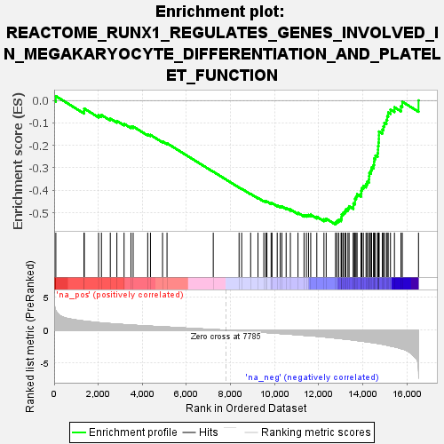
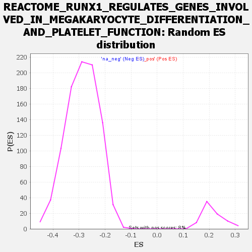

| | | Dataset | all_genes |
| Phenotype | NoPhenotypeAvailable |
| Upregulated in class | na_neg |
| GeneSet | REACTOME_RUNX1_REGULATES_GENES_INVOLVED_IN_MEGAKARYOCYTE_DIFFERENTIATION_AND_PLATELET_FUNCTION |
| Enrichment Score (ES) | -0.55261856 |
| Normalized Enrichment Score (NES) | -1.9200915 |
| Nominal p-value | 0.0 |
| FDR q-value | 0.0021787994 |
| FWER p-Value | 0.063 |
Table: GSEA Results Summary

Fig 1: Enrichment plot: REACTOME_RUNX1_REGULATES_GENES_INVOLVED_IN_MEGAKARYOCYTE_DIFFERENTIATION_AND_PLATELET_FUNCTION
Profile of the Running ES Score & Positions of GeneSet Members on the Rank Ordered List
| SYMBOL | RANK IN GENE LIST | RANK METRIC SCORE | RUNNING ES | CORE ENRICHMENT | | 1 | KAT2B | 76 | 2.941 | 0.0197 | No |
| 2 | H3-3A | 1355 | 1.380 | -0.0467 | No |
| 3 | AGO4 | 1363 | 1.374 | -0.0357 | No |
| 4 | DPY30 | 2014 | 1.146 | -0.0658 | No |
| 5 | AGO1 | 2144 | 1.100 | -0.0646 | No |
| 6 | RUNX1 | 2546 | 0.996 | -0.0807 | No |
| 7 | PRMT1 | 2844 | 0.926 | -0.0911 | No |
| 8 | H2AZ2 | 3171 | 0.852 | -0.1039 | No |
| 9 | ASH2L | 3483 | 0.786 | -0.1164 | No |
| 10 | SIN3A | 3582 | 0.765 | -0.1160 | No |
| 11 | TNRC6C | 4243 | 0.634 | -0.1509 | No |
| 12 | PRMT6 | 4368 | 0.613 | -0.1534 | No |
| 13 | TNRC6A | 4916 | 0.517 | -0.1824 | No |
| 14 | RBBP5 | 5119 | 0.484 | -0.1906 | No |
| 15 | HDAC1 | 7216 | 0.107 | -0.3172 | No |
| 16 | PRKCQ | 8387 | -0.111 | -0.3874 | No |
| 17 | WDR5 | 8505 | -0.132 | -0.3935 | No |
| 18 | H2AC18 | 8912 | -0.208 | -0.4164 | No |
| 19 | SIN3B | 9245 | -0.278 | -0.4343 | No |
| 20 | H3-3B | 9510 | -0.330 | -0.4476 | No |
| 21 | AGO3 | 9601 | -0.351 | -0.4502 | No |
| 22 | H4C11 | 9651 | -0.364 | -0.4502 | No |
| 23 | THBS1 | 9841 | -0.405 | -0.4583 | No |
| 24 | ITGA2B | 9880 | -0.415 | -0.4572 | No |
| 25 | H4C8 | 10118 | -0.469 | -0.4678 | No |
| 26 | H4C14 | 10252 | -0.501 | -0.4717 | No |
| 27 | H2BC9 | 10328 | -0.517 | -0.4720 | No |
| 28 | EP300 | 10522 | -0.568 | -0.4791 | No |
| 29 | H2AX | 10714 | -0.609 | -0.4856 | No |
| 30 | H4C1 | 11059 | -0.692 | -0.5008 | No |
| 31 | H2BC21 | 11333 | -0.770 | -0.5111 | No |
| 32 | H4C13 | 11441 | -0.796 | -0.5110 | No |
| 33 | TNRC6B | 11537 | -0.819 | -0.5100 | No |
| 34 | NR4A3 | 11637 | -0.842 | -0.5091 | No |
| 35 | KMT2B | 11913 | -0.912 | -0.5183 | No |
| 36 | H3C4 | 12237 | -1.014 | -0.5296 | No |
| 37 | SETD1B | 12338 | -1.045 | -0.5270 | No |
| 38 | NFE2 | 12760 | -1.190 | -0.5428 | Yes |
| 39 | H2BC12 | 12827 | -1.214 | -0.5368 | Yes |
| 40 | MOV10 | 12909 | -1.240 | -0.5315 | Yes |
| 41 | H4C12 | 13014 | -1.279 | -0.5272 | Yes |
| 42 | MYL9 | 13036 | -1.289 | -0.5179 | Yes |
| 43 | SETD1A | 13040 | -1.290 | -0.5074 | Yes |
| 44 | H2BC17 | 13107 | -1.313 | -0.5006 | Yes |
| 45 | H3C6 | 13182 | -1.345 | -0.4940 | Yes |
| 46 | H2BC14 | 13229 | -1.363 | -0.4855 | Yes |
| 47 | H2BC3 | 13325 | -1.395 | -0.4798 | Yes |
| 48 | H4C2 | 13377 | -1.412 | -0.4712 | Yes |
| 49 | H2BC13 | 13571 | -1.489 | -0.4707 | Yes |
| 50 | H2BC11 | 13574 | -1.491 | -0.4585 | Yes |
| 51 | H3C12 | 13646 | -1.524 | -0.4502 | Yes |
| 52 | H2AJ | 13647 | -1.525 | -0.4376 | Yes |
| 53 | KMT2C | 13695 | -1.545 | -0.4277 | Yes |
| 54 | KMT2A | 13741 | -1.566 | -0.4176 | Yes |
| 55 | H2BC10 | 13921 | -1.634 | -0.4149 | Yes |
| 56 | H2BC5 | 13928 | -1.637 | -0.4018 | Yes |
| 57 | H4C5 | 13957 | -1.648 | -0.3899 | Yes |
| 58 | H3C3 | 14026 | -1.683 | -0.3801 | Yes |
| 59 | CBFB | 14145 | -1.745 | -0.3729 | Yes |
| 60 | KMT2D | 14200 | -1.772 | -0.3616 | Yes |
| 61 | ZFPM1 | 14278 | -1.799 | -0.3514 | Yes |
| 62 | H4C9 | 14285 | -1.801 | -0.3369 | Yes |
| 63 | H2BC7 | 14296 | -1.805 | -0.3226 | Yes |
| 64 | H3C7 | 14369 | -1.845 | -0.3117 | Yes |
| 65 | H3C1 | 14400 | -1.861 | -0.2982 | Yes |
| 66 | H2BC26 | 14486 | -1.895 | -0.2877 | Yes |
| 67 | H2BC4 | 14509 | -1.907 | -0.2733 | Yes |
| 68 | H3C14 | 14517 | -1.912 | -0.2580 | Yes |
| 69 | H2AC8 | 14573 | -1.939 | -0.2453 | Yes |
| 70 | H2AC7 | 14673 | -1.992 | -0.2349 | Yes |
| 71 | H3C10 | 14689 | -2.001 | -0.2193 | Yes |
| 72 | H3C11 | 14693 | -2.002 | -0.2029 | Yes |
| 73 | H2AC14 | 14713 | -2.016 | -0.1874 | Yes |
| 74 | H4C16 | 14727 | -2.025 | -0.1715 | Yes |
| 75 | H2AC4 | 14730 | -2.025 | -0.1549 | Yes |
| 76 | H4C4 | 14732 | -2.027 | -0.1382 | Yes |
| 77 | H3C2 | 14885 | -2.125 | -0.1300 | Yes |
| 78 | H4C3 | 14934 | -2.159 | -0.1151 | Yes |
| 79 | H2BC6 | 14976 | -2.181 | -0.0995 | Yes |
| 80 | H2AC19 | 15071 | -2.247 | -0.0867 | Yes |
| 81 | H2BC15 | 15107 | -2.270 | -0.0701 | Yes |
| 82 | H3C13 | 15151 | -2.304 | -0.0537 | Yes |
| 83 | H2AC20 | 15254 | -2.386 | -0.0402 | Yes |
| 84 | H2BC8 | 15434 | -2.515 | -0.0303 | Yes |
| 85 | H2AC6 | 15731 | -2.781 | -0.0254 | Yes |
| 86 | GP1BA | 15791 | -2.845 | -0.0055 | Yes |
| 87 | H3C8 | 16526 | -6.120 | 0.0004 | Yes |
Table: GSEA details [plain text format]

Fig 2: REACTOME_RUNX1_REGULATES_GENES_INVOLVED_IN_MEGAKARYOCYTE_DIFFERENTIATION_AND_PLATELET_FUNCTION: Random ES distribution
Gene set null distribution of ES for REACTOME_RUNX1_REGULATES_GENES_INVOLVED_IN_MEGAKARYOCYTE_DIFFERENTIATION_AND_PLATELET_FUNCTION